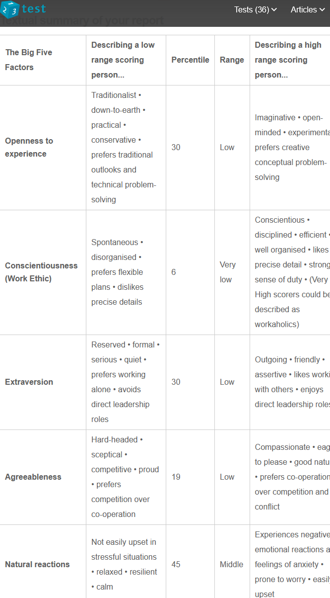

This profile a resource that provides my current personal and professional information to help identify what fields of IT I would most likely endevour to persue.
My name is Ben Tanner I'm 32yrs old, a massive canine enthusiast, 6'2" caucasian with dark (now greying) hair, typical ectomorph, english spoken only (hope to be bilingual soon), a "Magic, The Gathering" collector/player and am currently studing IT at RMIT.
Being brought up in a larger counrty town on the border of NSW and VIC- Australia, I've discovered an interest in IT, in perticular Mechatronics
( a combination of mechanical and electrical engineering to produce such systems with robotics, telecommunications, computer science, control and product engineering), and after having spent 16yrs in commercial kitchens as both a chef and kitchenhand producing food seems to have lost it's purpose.
Not being exposed to a great amount of gadgetry in my middle chidlehood and adolescence has given me an interest to discover, create and develop some of my own design, ie- exoskeleton bionics.
With past back injuries, a loss of interest and ability to perform in my current career I've found myself looking at new studies involving new interests.
So having no IT experience and background in IT, and suffering from travelling restrictions due to Covid rules and regulations, enrolling in RMIT is very appealing as it is 100% online and enables me to develop some understanding of IT fields and how I can carve a career into it.
My IT purpose as of now (December 2021), is to develop basic IT knowledge and skills to acquire a low level job to assess where/ when/ how and why I can go into a spercific field of the industry, taking into account my lifestyle, time, costs, ability and willing sacrifices to the end goal.
RMIT is my current main source of information and direction on what field/s I want to persue. Previous to studing though my main interests in IT were online gaming and PC builds, but the thought of being able to develop specific apps was what started my quest to up skill and learn on how to do so.
Learning HTML, CSS, Pthyon etc. seems like a great start into developing programming skills and should help me on my way to find out what I can do in the future in terms of an IT career. My initial idea is to try to get into something like robotics/mechatronics and have an input into developing technologies like prosthetics to help with transport, construction and general movement through neurobionics/ neuroprosthestics. "Autobots roll out".
After developing some basic software apps, I want to develop something in the area of robotics.
So at the moment I am looking into future studies like-Computer Science (3 years to study), Mechatronics (another 4 years) specialising in Bionics but am keeping an open mind as there is still a lot to discover. My first projects may not be directly related to my where I want to be, so I am seeing them as necessary stepping stones.
A first job in the vast fields of IT might just be a simple developer. To learn IT lingo, decorum, workflow, infrastructure and develop a standard of continuous learning would help propel me into what field I would want as a last job.
The last job for me as I see it now, would like developing software and hardware in neurobionics. Creating devices to assist in movement and ability to those who have lost limbs or to temporarily enhance or give new functions for such things as factory work, transport, communication or leisure, ie. mech suits, driverless cars,
hands free phones or enchanced VR for gaming.

My "Myers-Briggs personality test" shows I am well balanced in most aspects for a potential employee. As my "Thinking" and "Judging" scores would point out, I typically put my feeling to the side and get on with the task at hand. I am neither too extraverted or introverted, equals parts intutive and observant, and my assertiveness and turbulent levels show I can handle most situations by making controlled accrurate decisions.

The "VARK Learning test" can show I am slightly more of a practical learner then Visual and writtern learner. Although, I do like to have information writern down and demonstrations shown aswell. I feel this shows I can easily adapt to most learning environments.

In the "123 test" my range shows I'm not easily upset in stressful situations, I''m competitive, prefer to look at things in a technical way, practical and a down-to-earth person. Some describing details in this test look to be counter-intuitive.
Reschedule would be a mobile app that stops incoming contact to prevent distractions and create a schedule in the process (ie. calls, text) and replies in kind with a customised message/s to notify when you are free, where you'll be,
what you are currently doing etc. with features such as "breaking through the app with a text/call" for emergencies, prerecorded texts/voice mail for certain individuals/numbers/events/time periods, creating a schedule option for others and yourself as to avoid contact and utilize time.
Flash CV Pro would be a quick and easy program with mostly auto-fill features to produce a professional looking CV efficiently avoiding great time expenditure.
Summary Text Compiler can select main points of information out of a contents. Features would include percentage of information/time for any article and which chapters to focus on or give greater depth, suggested sources of related information that may be more beneficial to a given task, popular information sites and suggested related sources that tie into multiple summaries.